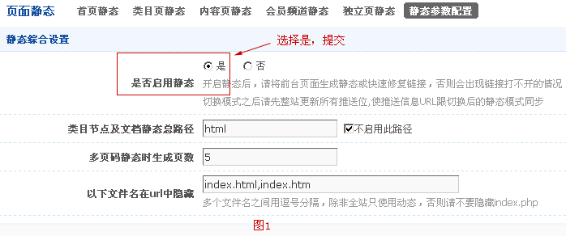
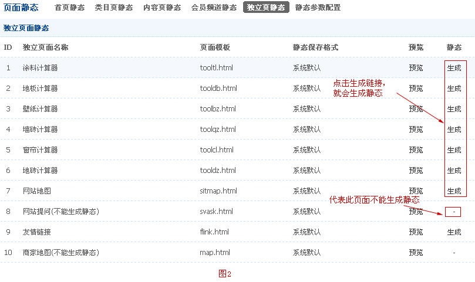
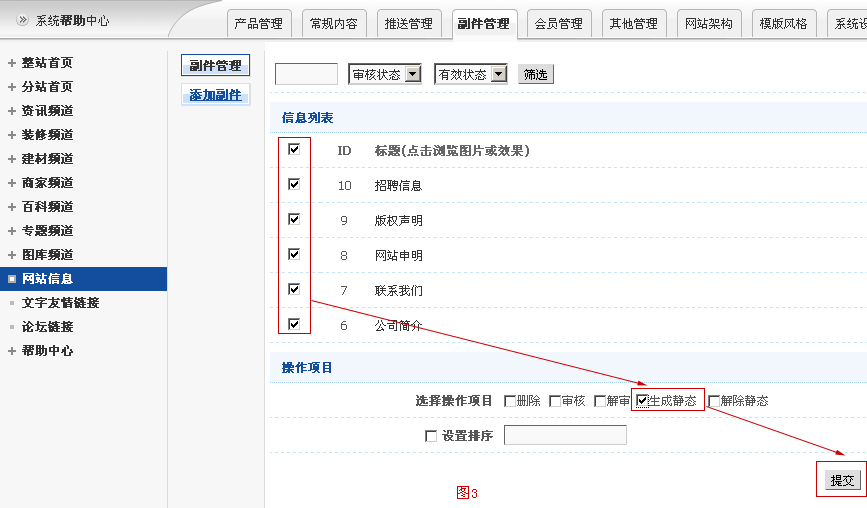
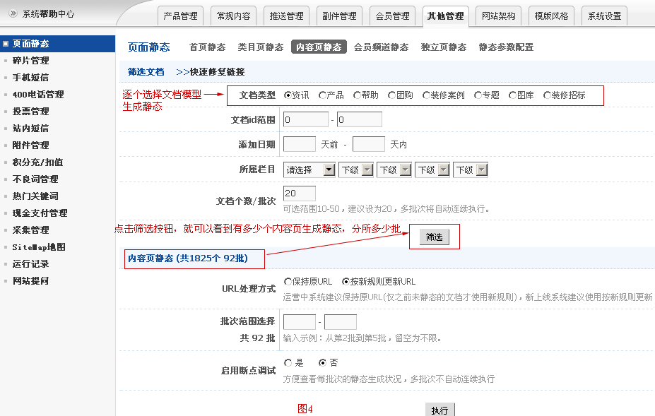
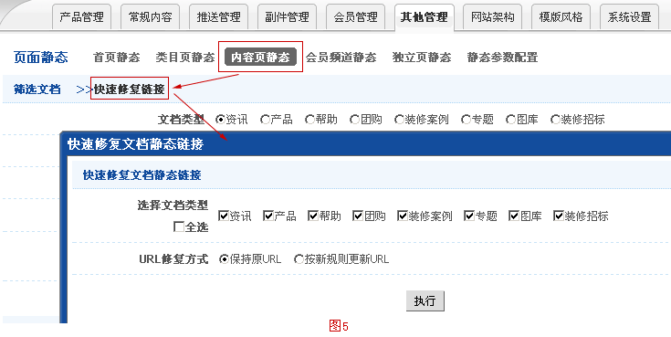
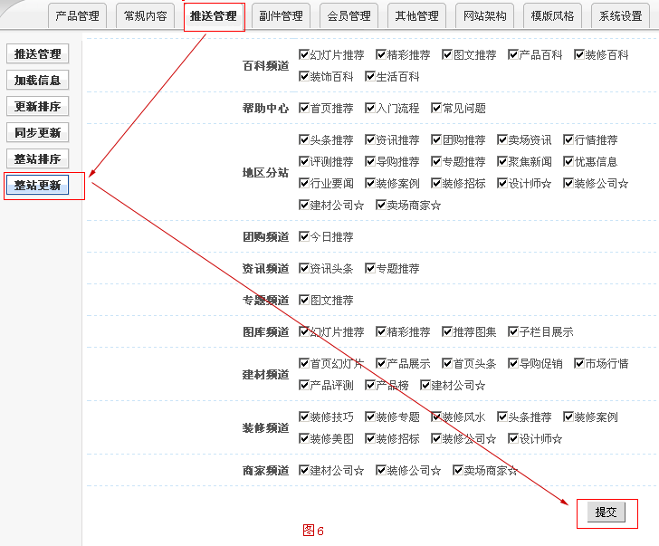
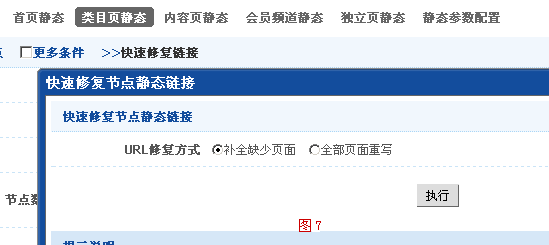

静态生成篇
现在为大家介绍一下静态生成的过程，按以下几个步骤。（注意：该篇文档主要针对新上线系统，页面由动态页面转换为静态页面的说明，目的让用户快速生成静态）
一、静态参数配置
-
首先，配置好静态参数配置（后台->其他管理->页面静态- >静态参数配置），根据自己所需格式配置好所需静态参数。启用静态生成，如图1所示

二、静态页面生成
- 2.1 建议开始先执行独立页静态生成（如图2所示）
-

- 2.2然后执行网站信息（网站一些附属页如联系方式）生成（副件管理->网站信息），如图3所示
-

- 2.3 接着，执行内容页静态（其他管理->页面静态->内容页静态），如图4所示
-

-
其中
A、保持原URL，建议运营中系统采用保持原URL，有关网站收录问题。
B、按新规则更新URL ，建议新上线系统采用按新规则更新URL。
C、当静态参数配置进行更改或栏目的静态文件保存目录及文档页静态保存格式修改时，则会更改静态链接，若想更改静态链接，就执行按新规则更新URL，反之，就保持原URL。
D、快速修复链接（图5所示），主要针对404页面，有些页面可能没有生成到，造成页面突然打开，可以先执行快速修复链接，例如，新上线系统，页面是动态的，当启用静态时，页面就会出现静态链接，当还没执行静态生成时，点击页面是打不开，为了避免404页面，可以先执行快速修复链接，让链接就会处于动态链接，然后再去执行静态页面生成。还有种情况，修改静态参数配置，静态链接就会更改，之前静态规则链接还存在，从栏目列表页（还没重新执行静态）点击内页时，就会发现链接是前静态规则链接，点击时可能出现404，在未执行完静态生成，可先执行快速修复链接，就先保持前静态规则链接，当内容页静态执行完毕，就执行类目页静态。就会恢复到你所更改静态链接。

- 再次，去更新一下推送位（点击其中一个推送位->整站更新，如图6所示）
-

- 最后执行首页静态、类目页静态（对快速修复链接的说明如图7所示）、会员频道静态。
-

类目页静态中快速修复链接：当系统开启静态模式时，在未主动生成静态时，点击栏目时，会发现打不开，出现404页面，所以为让前台页面先正常访问，可以先执行快速修复链接，也会有两种情况，一种是新上线时，页面是动态的。二种是修改了类目的静态文件保存目录，与内容页静态快速修复链接的原理类似。